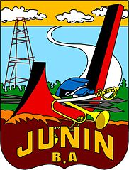

El departamento de Junín, escenario de los Andes Peruanos, tiene una tradición que data desde la época Pre-Inca donde fue habitado por cazadores precerámicos, como los Pumpus y Tarumas; en el Valle del Mantaro, especialmente en Jauja, vivió otra famosa tribu, la de los Huancas, idólatras, bárbaros y crueles.
ESCUDO

GOBERNADOR REGIONAL
DR. FERNANDO ORIHUELA ROJAS
Nació en el distrito de Pilcomayo, provincia de Huancayo, departamento de Junín. Cursó estudios de medicina humana en la Universidad Peruana Los Andes titulándose el año 2009. Durante los años 2016 al 2017, fue director Regional de Salud en Cerro de Pasco y desde 2017 hasta 2018 fue director Ejecutivo del Hospital Eleazar Guzmán Barrón de la ciudad de Nuevo Chimbote en Ancash.
Se encuentra inscrito en el Partido Político Nacional Perú Libre desde el 27 de octubre del 2015. Fue candidato a congresista por el departamento de Junín por dicho partido en las elecciones generales del 2016 sin obtener representación.
En las elecciones del año 2018 fue candidato a vicegobernador regional de Junín detrás de Vladimir Cerrón Rojas logrando el triunfo con el 36.888% de los votos.
El 20 de agosto de 2019, debido a la suspensión del gobernador Cerrón debido a la condena penal que recibió, Orihuela asumió el cargo de gobernador regional de Junín.
MAPA DEL DEPARTAMENTO
Situación geográfica:
Está ubicado en el centro del Perú, al este de la Cordillera de los Andes
Límites:
Limita por el sur con los departamentos de Huancavelica y Ayacucho, con Pasco y Ucayali por el norte, con Cusco por el este y con Lima por el oeste
Superficie:
El departamento presenta una extensión de 20.895,79 km²
Clima:
El clima en la sierra baja (3.500 msnm) es por lo general templado y seco (en el día 25 °C y en la noche desciende a 5 °C). En la sierra alta (3.600 msnm) posee un clima frío y seco y las temperaturas pueden llegar a descender a 0 ºC.
Relieve:
Nevados más importantes
Chancohuana Chico (5.331 m.s.n.m.)
Tetón (5.300 m.s.n.m.).
Ríos
Ríos más importantes
Pachachaca
Pampas
Organización político-administrativa
La capital del departamento es la ciudad de Huancayo y está dividido en 9 provincias y 123 distritos
 /
/